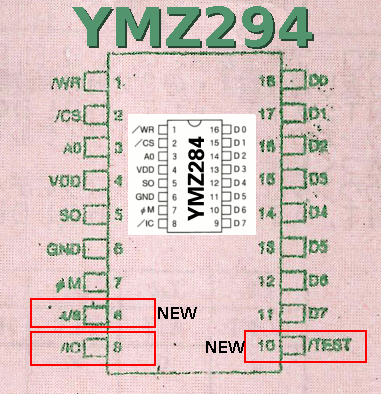

Tadaaaaa ♪

volume is low, you can see me in reflection ... I know ... hope you like it anyway.
See also how to generate tunes from MIDI files at MIDI, CSharp and Yamaha chips.
Documentation
Suggested wiring hint here under. The bold pins are the difference between the YMZ294 and the YMZ284. You can wire it otherwise, but if you wire like that my samples will work directly :
"Left side"
|
"Right side"
|
- /WR : Arduino pin 10
- /CS : Arduino pin 11
- A0 : Arduino pin 12
- VDD : %205v
- SO : SOund output, to the HP or amp
- GND : ground
- M : to the oscillator
- 4/8 : High is 4MHz, Low is 8 MHz. Mine is connected to Vcc (4Mhz crystal)
- /IC : can leave floating or connect to VCC
|
- D0 : Arduino pin 2
- D1 : Arduino pin 3
- ...
- ...
- ...
- ...
- ...
- D7 : Arduino pin 9
- /TEST : floating or VCC
|
Things to know
- Beware of short-circuits : the oscillator I got had its case connected to the ground, and one Vcc wire too long was short-circuiting because touching it.
- You need 11 pins to drive it : 8 for data bus, 3 for control (WR, CS, A0)
- Port TEST should be left un-connected
- Port IC (reset) can also be left unconnected (it seems at least)
Note about the oscillator
Since many people asked me, you must use here an oscillator, and not a crystal. Reason is that you must feed your chip with a
square signal on just one pin, so no crystal here (unlike what you would have next to your Atmel MCU). Anything that makes a square signal will do the trick, but must be in range 1MHz to 8Mhz.
Documentation
Datasheets
NONE on the net, not even on Yamaha website.
So, by reading the japanese documentation provided by Akizuki, I got it is the
same as a YMZ284 (YMZ294 has 2 extra pins, one for test mode and the other one for choosing the crystal frequency 4/8 MHz). Wiring is the same as YMZ284 therefore.
And to me it looks like also its friend the YM2149. So I put these documentations here :
Websites and tutorials
Looks like everything is in japanese...
Midi music
Code
See also how to generate tunes from MIDI files at MIDI, CSharp and Yamaha chips.
Shopping